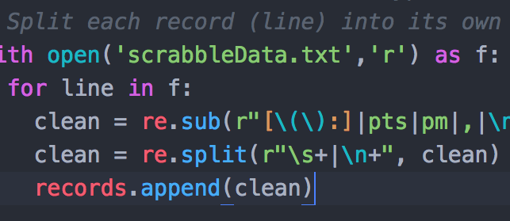

Descrabbling the Data
So after our Scrabble game we had a text file with hand-entered records of our each play like this:
6:26pm James: Maze (15 pts)
6:26pm Zach: Zest (15 pts)
...
Sure we could just make a table by hand and count up all the points. But we have a lot more interesting info here: the words played, how many words per play, how long each play took, and others I can’t even figure out.
How could we process this text file to total up the scores and tell us other interesting things?

I decided to use the Python I learned in CS 131A to write a program that analyzes the text.
At first I thought it would be easy to just read each line and connect the scores with each of our names. But then I realized it would be more useful to have a program that worked with *any* name.
So I made a dictionary of players that would have the players names as keys and data about the players as the values.
I split each line of the file into a list and then I used regular expressions to pull out the players names and put them into the dictionary and then to pull out the scores and put them in a list for each player.
This regex was challenging because of the (intentional?) human error that I had to work around, like when there were spaces or other delimiters missing or duplicated. Testing on Regex101.com really helped.
I’d like to do more analysis of the words played, like to check against a dictionary to tell how obscure the word is. I think I need to learn more about Scrabble first though!